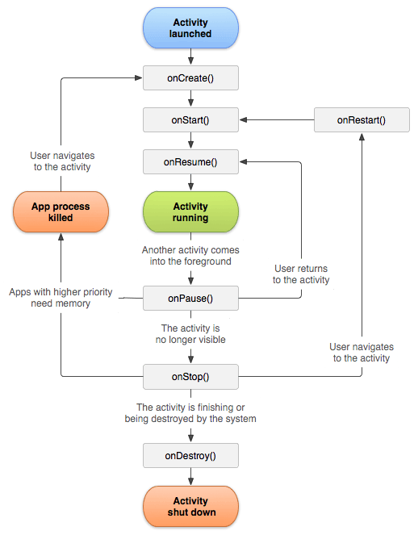

On this page:
Here's a high-level overview of building an Android app using Code on the Go:
1. Set up a new project
Choose a project template, such as Empty Activity, which provides a basic layout for your app with one screen (Activity).
Define your app name, package name, and target device API level.
2. Understand the project structure
Java/Kotlin Code: Located in the app/src/main/java directory. This is where you'll write your program logic, such as activities, services, etc.
XML Layouts: Located in the res/layout folder. These define the UI of your app.
Manifest File: AndroidManifest.xml defines essential app information, like activities, permissions, and app metadata.
3. Create the user interface (UI)
Use the Layout Editor (drag-and-drop) or write XML to define your app's User Interface (UI).
Common elements include TextView, Button, and RecyclerView.
4. Write Java or Kotlin code (logic)
Logic for the app is written in activities such as MainActivity.java (or other activities).
Lifecycle methods such as onCreate(), onStart(), and onDestroy() control how the app behaves as it moves between different states.
5. Run and test the app
UPDATE THIS FOR CODE ON THE GO Use the Android Emulator (or connect a real device) to run and test your app.
CAN YOU REALLY? You can simulate different screen sizes, versions, and orientations.
6. Debug the app
Code on the Go has a built-in debugger to help you find and fix issues.
You can use breakpoints and view logs using Logcat. CAN YOU THOUGH???
Build the APK or App Bundle for distribution
In the MENUNAME menu, select Build > Build Bundle(s)/APK(s)
Android app development relies on the following concepts:
Activities Fragments : Reusable portions of UI inside an activity.
Intents : For navigation between activities or launching system services.
ViewModel : Manages UI-related data in a lifecycle-conscious way.
RecyclerView : Efficiently displays lists of data.
Gradle : The build system for configuring dependencies and app versions.
Lifecycle refers to the series of states that an Android activity or fragment goes through from its creation to its destruction. The lifecycle ensures that your app behaves correctly during different user interactions (like rotating the screen) and system conditions (like restoring the app's state when a user returns to your app). The following image shows the flow and relationships of all possible stages of an Android activity lifecycle.

There are seven key stages to an Android activity lifecycle.
onCreate()
Used when : The activity is first created.
Sample functions : Sets up the UI, initialize variables, and prepare resources.
See snippet (Java)
@Override
protected void onCreate(Bundle savedInstanceState) {
super.onCreate(savedInstanceState);
setContentView(R.layout.activity_main); // Sets the layout
// Initialize views and resources
}
See snippet (Kotlin)
@Override
protected void onCreate(Bundle savedInstanceState) {
super.onCreate(savedInstanceState);
setContentView(R.layout.activity_main); // Sets the layout
// Initialize views and resources
}
onStart()
Used when: The activity is about to become visible to the user.
Sample functions : Start animations or load resources that are needed when the activity is visible.
See snippet (Java)
@Override
protected void onStart() {
super.onStart();
// Register listeners, start UI updates
}
See snippet (Kotlin)
@Override
protected void onStart() {
super.onStart();
// Register listeners, start UI updates
}
onResume()
Used when : The activity is visible and interactive in the foreground for the user.
Sample functions : You can resume animations, refresh data, or reconnect to sensors.
See snippet (Java)
@Override
protected void onResume() {
super.onResume();
// Resume ongoing tasks or media playback
}
See snippet (Kotlin)
class CameraComponent : LifecycleObserver {
...
@OnLifecycleEvent(Lifecycle.Event.ON_RESUME)
fun initializeCamera() {
if (camera == null) {
getCamera()
}
}
...
}
onPause()
Used when : The activity is partially visible but not interactive (e.g., when a dialog box is displayed over the activity).
Sample functions : Pause ongoing actions, save transient data or stop animations.
See snippet (Java)
@Override
protected void onPause() {
super.onPause();
// Pause or throttle down operations (e.g., animations)
}
onStop()
Used when : The activity is no longer visible.
Sample functions : Release resources like stopping background processes or save persistent data.
See snippet (Java)
@Override
protected void onStop() {
super.onStop();
// Save persistent data or stop heavy resource usage
}
onDestroy()
Used when : The activity is being completely removed from memory as a result of user action or the system.
Sample functions : The user closes the app or the system needs to free up resources.
See snippet (Java)
@Override
protected void onCreate(Bundle savedInstanceState) {
super.onCreate(savedInstanceState);
setContentView(R.layout.activity_main); // Sets the layout
// Initialize views and resources
}
onRestart()
Used when : Called when the activity is stopped and then restarted (e.g. when a user returns to the open app)
Sample functions : Re-initialize anything that was released in onStop().
See snippet (Java)
@Override
protected void onCreate(Bundle savedInstanceState) {
super.onCreate(savedInstanceState);
setContentView(R.layout.activity_main); // Sets the layout
// Initialize views and resources
}